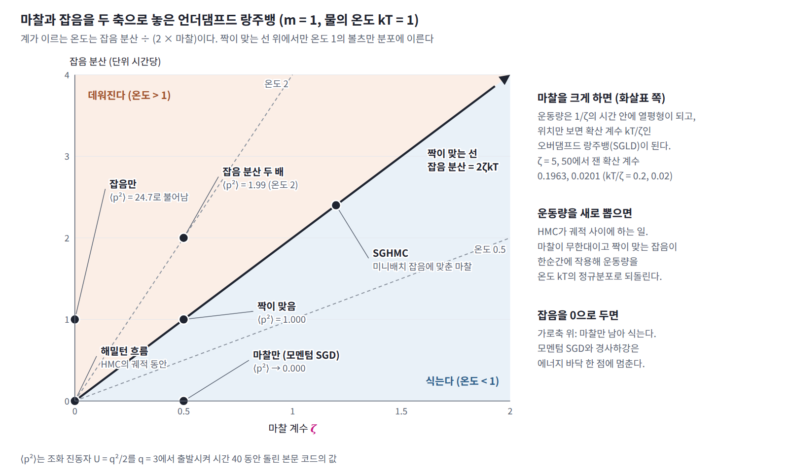
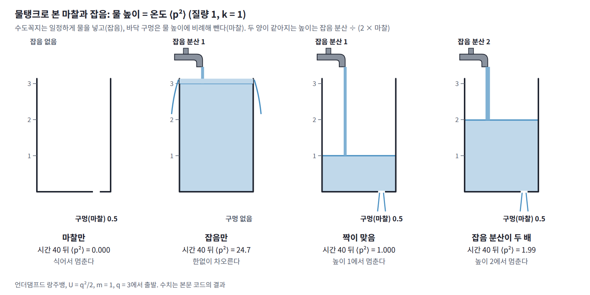

14장 — 브라운 운동, 랑주뱅, 포커–플랑크
이 장의 물음
경사하강에 잡음을 조금 섞으면 이상한 일이 생긴다. 손실 U(θ) = θ²/2를 θ = 3에서 출발해 학습률 η = 0.01로 경사하강하면 θ는 바닥 0으로 모여들어 멈춘다. 한 걸음마다 표준정규 잡음에 η를 곱해 더하면 θ는 0 둘레에서 조금 흔들릴 뿐이고, 사슬 4000개로 재 보면 그 분산은 0.0051이다. 그런데 잡음에 η 대신 √(2η)를 곱하면 흔들림이 갑자기 커져 분산이 0.997이 되고, θ의 값들을 모으면 표준정규분포, 곧 e^(−U)에 비례하는 분포가 나온다. 학습률을 0.1로 바꿔 보면 차이가 더 분명하다. η를 곱한 잡음에서는 분산이 0.052로 학습률을 따라 변하지만, √(2η)를 곱한 잡음에서는 1.04로 거의 그대로다. 웰링과 테(2011)는 이 성질을 큰 데이터의 베이즈 학습에 썼고, 논문 초록에 「표준적인 확률적 경사 최적화 알고리즘에 알맞은 양의 잡음을 더하면, 걸음 크기를 줄여 갈 때 반복값들이 참 사후분포의 샘플로 수렴함을 보인다」고 적었다. 이 방법이 SGLD(stochastic gradient Langevin dynamics)다.

확산 모델에서도 같은 모양이 나온다. DDPM(호·자인·아빌 2020)은 한 단계마다 샘플에 √(1 − ε)를 곱하고 표준편차 √ε인 잡음을 더한다(논문의 기호는 β이지만 역온도 β와 겹치므로 이 장에서는 ε로 쓴다). ε가 작으면 √(1 − ε) ≈ 1 − ε/2이므로, 이 단계는 U(x) = |x|²/2를 걸음 ε/2로 경사하강하면서 잡음 √(2 × ε/2)를 더하는 것과 같다. 분산을 끝없이 키우는 분산 폭발형과 달리 샘플을 원점 쪽으로 조금씩 당기므로, ε를 10⁻⁴에서 0.02까지 늘려 가며 1000단계를 지나면 원래 이미지는 0.0064배만 남고 분포는 데이터와 상관없이 거의 표준정규분포가 된다. 두 경우 모두 「에너지의 내리막으로 η만큼 가고, √(2η)만큼 흔든다」는 규칙을 쓰고, 도착하는 분포는 e^(−에너지)에 비례한다. 잡음은 왜 걸음의 제곱근만큼이어야 하고, 이 규칙은 왜 하필 볼츠만 분포에 도착할까?
이 물음에 답하려면 몇 가지를 차례로 알아야 한다.
- 잡음을 조금씩 더해 가는 샘플 하나는 어떤 길을 걷고, 그 길의 빠르기는 얼마라고 말할 수 있을까?
- 그런 샘플을 아주 많이 모으면, 그 분포는 어떤 규칙에 따라 바뀔까?
- 내리막으로 끄는 힘과 잡음이 함께 있을 때 분포는 어디에 도착하고, 잡음의 크기는 그 도착점을 어떻게 정할까?
- 모멘텀을 쓰는 경사하강처럼 샘플이 운동량을 가지면, 잡음은 얼마나 넣어야 할까?
역사: 떨리는 알갱이에서 랑주뱅 방정식까지
물에 뜬 작은 알갱이의 떨림은 처음에는 설명할 수 없는 현상이었고, 설명된 뒤에는 원자를 세는 도구가 되었으며, 컴퓨터가 널리 쓰인 뒤로는 계산의 도구가 되었다. 이 장에 필요한 것은 그 가운데 세 가지다. 알갱이 하나가 걷는 길과 알갱이 여럿의 분포를 잇는 방법, 흔드는 힘과 막는 힘이 같은 뿌리에서 나온다는 발견, 그리고 무작위 힘을 넣은 운동 방정식이다.
| 연도 | 사람 | 내용 |
|---|---|---|
| 1827 | 브라운 | 물에 띄운 꽃가루에서 나온 작은 알갱이들이 멈추지 않고 떨리는 것을 현미경으로 관찰 |
| 1905 | 아인슈타인 | 떨리는 알갱이들의 분포가 확산 방정식을 따르고, 확산 계수가 온도와 점성 저항으로 정해짐을 보임 |
| 1905 | 피어슨 | 『네이처』에 보낸 편지에서 「랜덤 워크」라는 이름으로 문제를 냄 |
| 1908 | 랑주뱅 | 뉴턴의 운동 방정식에 점성 저항과 무작위 힘을 넣은 방정식 |
| 1914, 1917 | 포커, 플랑크 | 무작위 힘을 받는 입자들의 분포가 따르는 방정식 |
| 1928 | 존슨, 나이퀴스트 | 저항 양 끝의 열잡음을 측정하고 저항값과 온도로 설명 |
| 1930 | 울렌벡, 오른스타인 | 속도까지 넣은 브라운 운동의 풀이 |
| 1940 | 크라머르스 | 무작위 힘을 받는 입자가 에너지 장벽을 넘는 빠르기 |
| 1951 | 캘런, 웰턴 | 마찰과 잡음의 관계를 일반적인 계로 넓힘 (요동-소산 정리) |
| 2011 | 웰링, 테 | 미니배치 경사하강에 잡음을 더한 SGLD |
| 2019 | 송, 에르몬 | 학습한 스코어로 랑주뱅 방정식을 돌려 이미지를 만드는 생성 모델 |
| 2020 | 호, 자인, 아빌 | 샘플을 줄이며 잡음을 더하는 확산 모델 DDPM |
1827년 여름 식물학자 로버트 브라운은 물에 띄운 꽃가루에서 나온 작은 알갱이들이 쉬지 않고 떨리는 것을 현미경으로 보았다. 그는 생명 현상을 의심해 오래 말린 표본과 돌가루까지 물에 띄워 보았지만 똑같은 떨림이 나타났다. 1905년 아인슈타인의 논문은 이 떨림을 물 분자의 충돌로 설명하면서 두 가지를 했다. 첫째, 알갱이마다 다른 알갱이와 상관없이 움직이고 한 알갱이의 움직임도 시간 구간마다 서로 상관없다고 가정해, 알갱이들의 분포가 확산 방정식을 따르고 한 방향으로 옮겨 간 거리의 제곱평균제곱근이 √(2Dt)임을 보였다. 둘째, 알갱이들에 바깥 힘이 걸린 상황을 생각했다. 힘에 끌려 한쪽으로 흐르는 알갱이의 양과 농도 차이 때문에 거꾸로 퍼지는 양이 비기는 평형에서, 확산 계수가 기체 상수 × 온도 ÷ (아보가드로 수 × 6π × 점성 × 알갱이 반지름)으로 정해진다는 것을 얻었다. 그는 17°C의 물과 지름 1000분의 1 mm인 알갱이를 넣어, 한 방향으로 1초에 약 0.8 μm, 1분에 약 6 μm 옮겨 간다고 예측했다. 이 식에서 알갱이를 흔들어 퍼뜨리는 정도(확산 계수)는 알갱이의 움직임을 막는 정도(점성 저항)와 온도로 정해진다. 흔드는 것과 막는 것이 같은 물 분자에서 나오기 때문이다.

같은 해 여름 통계학자 칼 피어슨은 『네이처』에 편지를 보내, 한 사람이 일정한 거리를 곧게 걷고 아무 방향으로나 돌아 다시 같은 거리를 걷기를 n번 되풀이할 때 출발점에서 얼마나 떨어져 있을지를 물으며 이것을 「랜덤 워크」라 불렀다. 레일리 경이 곧 답을 보냈고, 피어슨은 그 답을 받아 들고 「트인 들판에서 제 발로 설 수 있는 술 취한 사람을 찾으려면 출발점 근처가 가장 가능성 높은 곳」이라는 교훈을 적었다.

1908년 폴 랑주뱅은 프랑스 과학 아카데미 회보에 짧은 글을 싣고, 아인슈타인의 결과를 「완전히 다른 방법으로 무한히 더 간단하게」 얻을 수 있다고 썼다. 그는 알갱이 하나에 뉴턴의 운동 방정식을 쓰고, 물 분자가 주는 힘을 둘로 나눴다. 하나는 속도에 비례해 움직임을 막는 점성 저항 −6π × 점성 × 반지름 × 속도이고, 다른 하나는 방향과 크기가 제멋대로인 「보충하는 힘」이다. 보충하는 힘의 평균이 0이고 알갱이의 운동에너지 평균이 온도로 정해진다는 것만 써서, 그는 아인슈타인의 변위 공식을 몇 줄 만에 다시 얻었다. 분포의 방정식 대신 입자 하나의 운동 방정식에 무작위 힘을 넣는 이 방식이, 오늘날 SGLD와 확산 모델의 샘플러가 한 걸음씩 계산하는 방식이다. 입자 하나의 방정식에서 분포의 방정식을 끌어내는 일반적인 규칙은 1914년 아드리안 포커와 1917년 막스 플랑크가 적었고, 오늘날 포커–플랑크 방정식이라 불린다.
흔드는 것과 막는 것의 관계는 20년 뒤 전기 회로에서 다시 나타났다. 1928년 벨 연구소의 존 존슨은 전류가 흐르지 않는 저항의 양 끝에서도 전압이 쉬지 않고 흔들리며, 그 제곱 평균이 저항값과 절대온도에 비례함을 측정했다. 같은 연구소의 해리 나이퀴스트는 같은 해 이 잡음을 열역학으로 설명했다. 전하의 흐름을 막아 열을 내는 저항이 곧 전하를 흔드는 원인이라는 것이다. 1951년 캘런과 웰턴은 에너지를 잃는 선형 계라면 어디서나 마찰의 크기와 온도가 잡음의 크기를 정한다는 일반적인 관계를 증명했고, 이 관계는 오늘날 요동-소산 정리라 불린다.
작은 문제: 동전을 던져 격자 위를 걷는 사람들
정사각 격자의 한가운데 칸에 100만 명이 서 있다. 신호가 울릴 때마다 모든 사람이 동전 두 개를 던져 위, 아래, 왼쪽, 오른쪽 가운데 하나를 똑같은 확률 1/4로 고르고 그쪽으로 한 칸 옮겨 간다. 사람마다 동전을 따로 던지므로 같은 칸에서 출발해도 곧 흩어진다.
한 사람의 길은 제멋대로다. 왼쪽으로 세 번 연달아 갔다가 오른쪽으로 두 번 돌아오기도 하고, 100걸음 뒤에 출발점에 서 있기도 하고 15칸 떨어진 곳에 가 있기도 하다. 그러나 100만 명을 모아 보면 규칙이 보인다. n걸음 뒤 출발점에서 떨어진 거리 제곱의 평균과, 출발점에 서 있는 사람의 비율, 출발점에서 가로로 10칸 떨어진 칸 (10, 0)에 서 있는 사람의 비율을 재어 보자. 옆에는 한가운데 칸에만 1을 두고 모든 칸을 동시에 이웃 넷의 평균으로 바꾸기를 n번 되풀이했을 때 그 칸에 남는 값을 나란히 적었다.
| 걸음 수 n | 거리 제곱의 평균 | 원점에 선 비율 | 이웃 평균: 원점 | (10, 0)에 선 비율 | 이웃 평균: (10, 0) |
|---|---|---|---|---|---|
| 99 | 99.07 | 0 | 0 | 0 | 0 |
| 100 | 100.10 | 0.00622 | 0.00633 | 0.00228 | 0.00235 |
| 400 | 400.00 | 0.00161 | 0.00159 | 0.00117 | 0.00124 |
세 가지가 눈에 띈다. 첫째, 거리 제곱의 평균이 걸음 수와 거의 같다. 100걸음 동안 한 칸씩 쉬지 않고 움직였는데도 출발점에서 떨어진 거리는 평균적으로 √100 = 10칸 남짓이다. 둘째, 사람들의 비율이 이웃 평균을 되풀이한 값과 소수 넷째 자리에서만 조금 다를 뿐 거의 같다. 한 사람 한 사람은 동전에 따라 제멋대로 걸었을 뿐, 누구도 이웃과 평균을 내지 않았는데 말이다. 셋째, 99걸음 뒤에는 원점에도 (10, 0)에도 아무도 없다. 칸을 바둑판처럼 두 색으로 칠하면 한 걸음마다 반드시 다른 색 칸으로 건너가므로, 홀수 걸음 뒤에는 모두 출발점과 다른 색 칸에 서 있다. 옆에 적은 이웃 평균의 값도 99번째에는 두 칸 모두 0이어서, 칸의 색이 똑같이 번갈아 빈다.

그렇다면 한 사람의 걸음과 모든 칸의 동시 평균은 무슨 관계일까? 그리고 100걸음을 걸어 10칸 간 사람은 얼마나 빨리 움직인 것일까? 한 걸음에 한 칸이니 빠르기는 1이라고 해야 할까, 100걸음에 10칸이니 0.1이라고 해야 할까?
패턴: 사람들의 분포는 이웃 평균을 따른다
첫 번째 물음부터 보자. n + 1걸음 뒤 어떤 사람이 칸 x에 서 있으려면, n걸음 뒤 x의 이웃 네 칸 가운데 하나에 서 있다가 x 쪽을 가리키는 동전이 나와야 한다. 그 동전이 나올 확률은 1/4이고 동전은 그 사람이 지금까지 어디를 걸어왔는지 기억하지 않으므로, n + 1걸음 뒤 x에 있을 확률은 이웃 네 칸에 있을 확률에 각각 1/4을 곱해 더한 것이다.
오른쪽 식은 칸마다 이웃 넷의 평균을 내는 규칙 그대로다. 한 사람이 서 있을 확률의 분포는 이웃 평균 규칙을 정확히 따르고, 100만 명의 비율은 그 확률을 표본으로 잰 것이어서 표본 오차만큼만 다르다. 이웃 평균의 규칙은 거꾸로 보면 모든 칸이 제 값을 네 등분해 이웃 네 칸에 하나씩 나눠 주는 것과 같은데, 한 칸의 값을 그 칸에 서 있을 확률로 읽으면 이것은 「그 칸에 선 사람이 네 방향 가운데 하나로 한 칸 옮겨 간다」는 말과 같다. 값을 나눠 주는 결정론적 규칙과 한 사람의 무작위한 걸음은 같은 것을 두 쪽에서 본 것이다.
패턴: 한 사람의 길에는 속도가 없다
이제 두 번째 물음, 한 사람의 빠르기를 보자. 빠르기를 따지기 전에, 한 사람이 걸음 수에 비해 얼마나 멀리 가는지부터 살펴보자.
작은 문제에서 거리 제곱의 평균이 걸음 수와 거의 같았던 이유는 한 사람의 걸음으로 읽을 수 있다. n걸음 뒤 위치는 걸음 s₁, s₂, …, sₙ의 합이므로 거리의 제곱은 걸음마다의 제곱 |sᵢ|² = 1의 합 n에, 서로 다른 두 걸음의 곱 sᵢ·sⱼ의 합을 더한 것이다. 두 걸음은 서로 따로 던진 동전으로 정해지고 한 걸음의 평균 이동은 0이므로, 곱의 평균도 0이 되어 교차항이 모두 사라진다. 그래서 거리 제곱의 평균은 정확히 n이다. 여기서 쓴 것은 한 걸음의 평균 이동이 0이라는 것과 걸음들이 서로 독립이라는 것 두 가지뿐이다. 동전 대신 한 걸음에 정규분포를 따르는 변위를 쓰든 걸음 크기를 제멋대로 섞든, 평균이 0이고 서로 독립이면 분산이 걸음마다 더해진다.
그러면 이 사람은 얼마나 빨리 움직인 것일까? 한 사람이 100만 걸음을 걷는 동안의 가로 위치를 Δ걸음 간격으로 재어, 한 구간에서 가로로 옮겨 간 거리의 절댓값을 Δ로 나눈 평균을 구하면 다음과 같다.
| 재는 간격 Δ (걸음) | 1 | 4 | 16 | 64 | 256 | 1024 |
|---|---|---|---|---|---|---|
| 가로 변위의 절댓값 ÷ Δ (평균) | 0.500 | 0.273 | 0.139 | 0.070 | 0.035 | 0.017 |
재는 간격을 네 배로 늘릴 때마다 빠르기가 절반이 된다. 한 구간에 옮겨 간 거리가 √Δ에 비례하므로 빠르기는 √Δ / Δ = 1/√Δ에 비례하는 것이다. 거꾸로 말하면 간격을 줄일수록 잰 빠르기는 한없이 커진다. 이 사람의 빠르기는 재는 간격에 따라 달라지므로 하나의 값으로 말할 수 없다.

칸과 걸음을 한없이 잘게 만들면 이 성질이 더 분명해진다. 칸 간격 a와 한 걸음의 시간 τ를 줄이면서 확산 계수 D = a²/(4τ)를 고정하면, 사람들의 분포는 점점 매끄러워져 열 방정식 ∂ρ/∂t = D∇²ρ를 따르지만 한 사람의 길은 매끄러워지지 않는다. 시간 Δt 동안 한 축으로 옮겨 가는 거리는 √(2DΔt) 정도인데, Δt가 작을 때 √Δt는 Δt보다 훨씬 크다. 그래서 길은 끊어지지 않고 이어져 있지만 어느 곳에서도 속도, 곧 Δx/Δt의 극한이 없다.
정리하면, 동전으로 걷는 사람 하나의 길과 그런 사람 여럿의 분포는 같은 과정을 두 쪽에서 적은 것이다. 한 사람의 길은 무작위하고 거칠어서 속도가 없고, 그 대신 변위의 분산이 시간에 비례해 쌓인다. 여러 사람의 분포는 결정론적이고 매끄러워서 이웃 평균, 곧 열 방정식을 따른다.
정의: 브라운 운동
칸과 걸음을 한없이 잘게 만든 극한에서, 한 사람의 길은 어떤 식으로 적을 수 있을까? 동전의 규칙에서 출발해 보자. 한 축에서 한 걸음의 분산이 a²/2이고 한 걸음에 시간 τ가 걸리므로, 단위 시간에 쌓이는 분산은 a²/(2τ) = 2D다. 극한의 길은 잘게 나눈 시간 Δt마다 평균 0, 분산 2DΔt인 독립 변위를 더해 간다. 걸음이 많이 모이면 변위의 분포는 동전 대신 무엇을 썼든 정규분포가 되므로, 처음부터 정규분포로 적어도 된다.
이런 길을 브라운 운동 (시간 구간마다 평균 0, 한 축 분산이 2D × 구간 길이인 독립 정규 변위를 더해 가는 연속한 길, Brownian motion)이라 한다. 식에서 Δt를 반으로 나눠 두 번 더해도 분산이 DΔt + DΔt로 똑같이 2DΔt이므로, 시간을 어떻게 나누든 같은 길이 나온다. 잡음 앞에 √Δt가 붙는 이유가 이것이다. 잡음 앞에 Δt를 붙이면 반으로 나눈 두 걸음의 분산 합이 원래의 절반이 되어, 시간을 잘게 나눌수록 잡음이 사라져 버린다. 분산 2D = 1인 경우, 곧 한 축에서 시간 t 동안의 분산이 t인 것을 표준 브라운 운동 B(t)라 하고, 짧은 시간 dt 동안의 변화 dB를 √dt × 표준정규 잡음으로 읽는다.
우유 한 방울을 물에 묽게 풀어 현미경으로 보면 지름 1 μm쯤 되는 지방 알갱이들이 쉬지 않고 떨리는 것이 보인다. 20°C 물속의 지름 1 μm 알갱이는 확산 계수가 약 4.3 × 10⁻¹³ m²/s여서 한 축으로 1초에 약 0.93 μm, 1분에 약 7.2 μm 옮겨 간다. 1분에 옮겨 간 거리가 1초의 60배가 아니라 √60 ≈ 7.7배다.

정의: 랑주뱅 방정식
브라운 운동은 아무 힘도 받지 않는 알갱이의 길이다. 그렇다면 알갱이에 힘이 걸리면 그 길은 어떻게 바뀔까? 위치에너지가 U(x)이면 알갱이는 −∇U의 힘을 받는다. 물속의 작은 알갱이는 속도를 아주 빨리 잊어서 가속하는 시간을 무시할 수 있고, 힘과 점성 저항이 비기는 속도로 곧바로 움직인다고 보면 된다. 속도에 비례해 움직임을 막는 힘의 비례 계수를 ζ라 하면 그 속도는 −∇U/ζ다. 이 끌려가는 움직임에 브라운 운동을 더한 것이 다음 식이다.
비례 계수 ζ는 마찰 계수(friction coefficient)라 부르고, 구가 점성 있는 액체 속을 움직이면 스토크스 저항 법칙에 따라 ζ = 6π × 점성 × 반지름이다. 이 식을 랑주뱅 방정식 (힘에 끌려가는 움직임에 브라운 운동을 더해 입자 하나의 무작위한 길을 적는 식, Langevin equation)이라 한다. 관성을 빼고 쓴 이 형태를 오버댐프드(과감쇠, overdamped) 랑주뱅 방정식이라 부르기도 한다. 오른쪽처럼 결정론적인 변화 dt 항에 브라운 운동의 변화 dB 항을 더해 적은 식은 확률 미분 방정식(stochastic differential equation, SDE)이라 부른다.
이제 이 장 첫머리의 규칙을 다시 보자. ζ = 1, Δt = η, D = 1로 두면 랑주뱅 방정식의 한 걸음은 θ ← θ − η∇U(θ) + √(2η)z, 곧 SGLD의 한 걸음이다. 끌려가는 항은 걸음 η에 비례하고 브라운 운동 항은 √η에 비례하는 것이 정확히 이 식의 모양이다. 잡음에 η를 곱하면 분산이 η²이므로, 이것은 2DΔt = η², 곧 D = η/2인 랑주뱅 방정식이 된다. 학습률을 줄이면 D도 0으로 가서 잡음이 사라진 경사하강으로 돌아간다. 첫머리에서 η를 곱한 잡음의 분산이 0.0051로 작았던 까닭이다.
일반화: 포커–플랑크 방정식
랑주뱅 방정식은 입자 하나의 길을 적는다. 같은 방정식을 따르는 입자를 아주 많이 풀어 놓으면 그 분포 ρ(x, t)는 어떻게 바뀔까? 확률은 생기거나 사라지지 않고 옆으로 흘러갈 뿐이므로, 한 점의 밀도는 들어온 흐름에서 나간 흐름을 뺀 만큼 바뀐다. 흐름은 둘이다. 하나는 모든 입자가 힘에 끌려가는 속도 −∇U/ζ로 움직여 생기는 흐름이다. 다른 하나는 브라운 운동이 만드는 퍼짐인데, 힘이 없을 때 입자들의 분포가 확산 계수 D인 열 방정식을 따른다는 것을 앞에서 보았다. 열 방정식을 흐름으로 읽으면 밀도의 흐름 ρv가 −D∇ρ, 곧 속도가 v = −D∇ln ρ인 흐름이다. 두 속도를 더하면 다음 방정식이 나온다.
오른쪽 식을 포커–플랑크 방정식 (랑주뱅 방정식을 따르는 입자들의 확률밀도가 시간에 따라 바뀌는 규칙, Fokker–Planck equation)이라 한다. 힘이 없으면 첫 항이 사라져 열 방정식이 되므로, 포커–플랑크 방정식은 열 방정식에 끌려가는 흐름의 항을 더한 것이다. 입자 하나는 무작위한 길을 걷지만 그 분포는 이 결정론적인 방정식을 따르고, 동전으로 걷는 사람과 이웃 평균의 관계가 힘이 있을 때도 그대로 성립한다.
flowchart TD
subgraph R1["격자 위"]
direction LR
A["동전으로 걷는 사람 하나<br/>x ← x + s"] -->|"많이 모으면"| B["이웃 평균<br/>ρ ← 이웃 넷의 평균"]
end
subgraph R2["칸과 걸음을 잘게"]
direction LR
C["브라운 운동<br/>x ← x + √(2DΔt) z"] -->|"많이 모으면"| D["열 방정식<br/>∂ρ/∂t = D∇²ρ"]
end
subgraph R3["힘 −∇U를 더하면"]
direction LR
E["랑주뱅 방정식<br/>브라운 운동 + 끌려가는 속도 −∇U/ζ"] -->|"많이 모으면"| F["포커–플랑크 방정식<br/>열 방정식 + 끌려가는 흐름"]
end
R1 --> R2 --> R3
정의: 아인슈타인 관계
그렇다면 포커–플랑크 방정식을 오래 돌리면 분포는 어디에 이를까? 그리고 그 도착점은 물의 온도와 어떤 관계일까? 두 흐름은 방향이 반대일 때가 많다. 에너지 골짜기에 입자가 모여 밀도가 높아지면, 끌려가는 흐름은 계속 골짜기 쪽으로 모으고 퍼지는 흐름은 골짜기 밖으로 흩는다. 두 흐름이 모든 곳에서 정확히 비겨 속도가 0이 되면 분포는 더는 바뀌지 않는다. 그 조건을 풀어 보자.

퍼지는 흐름과 끌려가는 흐름이 비기는 분포는 e^(−U/(ζD))이고, 이것은 ζD를 온도 자리에 둔 볼츠만 분포다. 온도 T인 물속의 알갱이들은 결국 볼츠만 분포 e^(−U/kT)에 이르러야 하므로 ζD = kT, 곧 D = kT/ζ여야 한다. 이 관계를 아인슈타인 관계 (확산 계수가 온도를 마찰 계수로 나눈 값과 같다는 관계, Einstein relation)라 하고, 스토크스 저항을 넣으면 아인슈타인이 1905년에 얻은 D = kT/(6π × 점성 × 반지름)이다. 식이 말하는 것은 분명하다. 온도가 정해져 있으면 입자를 흔드는 크기(D)와 입자를 막는 크기(ζ)를 따로 고를 수 없다. 둘은 같은 물 분자의 충돌에서 나오고, 그 곱이 온도다.
이것을 코드로 확인할 수 있다. 기울어진 이중 우물 U(x) = 2(x² − 1)² + 0.5x에서 볼츠만 분포(kT = 1)는 왼쪽 우물에 확률 0.7042를 준다. 랑주뱅 방정식을 ζ = 1, D = 1로 돌리면 왼쪽 비율이 0.7028, ζ = 2, D = 0.5로 돌리면 0.7002다. 둘 다 ζD = 1이라 같은 분포에 이르고, ζ는 도착하는 빠르기만 바꾼다. 반면 ζ = 1, D = 0.5로 돌리면 0.8657이 되는데, 이것은 kT = 0.5인 볼츠만 분포의 0.8656과 맞는다. 잡음을 줄이면 샘플러는 더 낮은 온도의 분포를 뽑는다.

이제 첫머리의 물음에 답할 수 있다. SGLD처럼 ζ = 1, 걸음 η, 잡음 √(2η)로 두면 ζD = 1이라 샘플러는 e^(−U), 곧 U = −ln π로 정한 목표 분포 π를 뽑는다. 잡음에 η를 곱하면 ζD = η/2라서 샘플러는 e^(−U/(η/2))를 뽑는데, U = θ²/2이면 이것은 분산이 η/2인 정규분포다. η = 0.01에서 0.005, 첫머리에서 잰 0.0051이 바로 이것이다. 더 일반적으로, 어떤 알고리즘이 한 걸음에 x ← x − a∇U + σz로 움직인다면 그 알고리즘은 온도 kT = σ²/(2a)의 볼츠만 분포를 향해 간다. 걸음 크기와 잡음의 크기를 따로 조절하는 샘플러는 모두 이 식으로 자기가 몇 도에서 샘플을 뽑는지 읽을 수 있다.
일반화: 언더댐프드 랑주뱅 방정식
지금까지는 관성을 뺐다. 물속의 작은 알갱이에서는 옳은 근사지만, HMC나 모멘텀 SGD처럼 운동량을 가진 계에서는 어떨까? 운동량을 다루려면 관성을 되살려야 한다. 랑주뱅이 1908년에 처음 쓴 것도 질량이 있는 뉴턴 방정식이었다. 위치 q와 운동량 p로 적으면 다음과 같다.
이 식을 언더댐프드 랑주뱅 방정식 (관성을 남겨 둔 채 해밀턴 흐름에 마찰과 잡음을 더한 식, underdamped Langevin equation)이라 한다. 마찰과 잡음을 지우면 dq = (p/m)dt, dp = −∇U dt로 해밀턴 방정식 그대로여서, 이 식은 해밀턴 역학 + 마찰 + 잡음이다. 이 식을 따르는 (q, p)의 분포는 위상공간의 볼츠만 분포 e^(−ℋ/kT)에 이른다.
정의: 요동-소산 정리
그런데 잡음 앞의 √(2ζkT)는 왜 하필 이 크기일까? 마찰과 잡음이 서로 다른 크기이면 무슨 일이 생길까? 이것은 운동에너지의 수지로 볼 수 있다. 해밀턴 흐름은 운동에너지와 위치에너지를 서로 바꿀 뿐 전체 에너지를 바꾸지 않으므로, 전체 에너지를 바꾸는 것은 마찰과 잡음뿐이다. 마찰은 운동량을 깎아 운동에너지를 빼내는데, 빼내는 빠르기는 마찰 계수와 지금의 운동에너지에 비례한다. 잡음은 운동량을 흔들어 운동에너지를 넣는데, 넣는 빠르기는 잡음 분산에 비례하고 지금의 운동에너지와는 상관없다. 둘이 비기는 곳을 계산하면 다음과 같다.
마찰 계수가 빼내는 쪽과 넣는 쪽에 똑같이 곱해져 있으므로, 비기는 곳의 운동에너지는 ζ와 상관없이 kT/2다. 마찰을 키우면 잡음도 같은 비율로 키워야 온도가 유지된다. 반대로 마찰만 있고 잡음이 없으면 운동에너지가 0으로 빠져나가 계가 식고, 잡음만 있고 마찰이 없으면 에너지가 들어오기만 해서 계가 한없이 뜨거워진다. 조화 진동자 U = q²/2(m = kT = 1)를 q = 3에서 출발시켜 시간 40 동안 돌리면, 마찰 0.5만 있을 때는 ⟨p²⟩가 0.000으로 멈추고, 마찰 0.5에 맞춘 잡음만 있을 때는 24.7로 불어나며, 둘을 함께 두면 1.000이 된다. 마찰은 0.5인데 잡음을 마찰 1에 맞춰 두면 ⟨p²⟩가 1.99로, 온도가 두 배인 분포에 이른다. 에너지를 잃게 하는 마찰이 있는 계는 반드시 그 마찰과 온도로 크기가 정해진 잡음을 받는다는 이 관계를 요동-소산 정리 (마찰로 에너지를 잃는 계가 받는 잡음의 크기가 마찰 계수 × 온도로 정해진다는 관계, fluctuation-dissipation theorem)라 한다. 아인슈타인 관계 D = kT/ζ는 관성을 뺀 경우의 요동-소산 정리다.
전기 회로의 저항도 같다. 저항은 전하의 흐름을 막아 전기 에너지를 열로 바꾸는 마찰이므로, 전류가 흐르지 않아도 저항 양 끝에는 그 저항값과 온도로 크기가 정해진 잡음 전압이 생긴다.
이것이 존슨–나이퀴스트 잡음이다. 실온(300 K)의 1 MΩ 저항을 주파수 폭 10 kHz로 재면 잡음 전압의 제곱평균제곱근은 약 12.9 μV다. 오디오 앰프의 볼륨을 끝까지 올렸을 때 들리는 「쉬」 소리의 한 몫이 이 열잡음이고, 아주 약한 신호를 재는 전파 망원경의 수신기를 극저온으로 식히는 까닭도 여기에 있다.
패턴: 마찰 계수의 양 끝
마찰과 잡음의 짝을 지키면서 마찰 계수를 0이나 아주 큰 값으로 보내면 어떻게 될까? 양 끝에서 익숙한 두 방정식이 나온다. ζ = 0이면 마찰도 잡음도 사라져 해밀턴 방정식만 남는다. 에너지를 지키며 등고선을 따라 도는 이 흐름에 HMC는 궤적 사이마다 운동량을 새로 뽑아 무작위성을 넣는데, 운동량을 통째로 새로 뽑는 것은 아주 큰 마찰과 짝이 맞는 잡음이 한순간에 작용해 운동량을 열평형으로 되돌리는 것과 같다. 반대로 ζ가 크면 운동량은 m/ζ의 시간 안에 열평형에 이르고, 그보다 긴 시간 동안 위치만 보면 확산 계수가 kT/ζ인 오버댐프드 랑주뱅 방정식이 된다. 위치에너지 없이 돌려 보면 ζ = 5, 50에서 ⟨q²⟩/(2t)가 0.1963, 0.0201로 kT/ζ = 0.2, 0.02에 가깝다. ζ = 0.5에서는 1.812로 kT/ζ = 2보다 작은데, 운동량을 잊는 시간 1/ζ = 2가 재는 시간 20에 비해 짧지 않아서다. 그리고 잡음을 0으로 두고 마찰만 남기면 계는 에너지 바닥 한 점에 멈추는데, 이것이 모멘텀 SGD다. HMC, SGLD, 모멘텀 SGD는 한 방정식에서 마찰과 잡음을 어떻게 두느냐가 다를 뿐이다.

보기: 코드
동전으로 걷는 사람들과 이웃 평균
작은 문제를 그대로 돌린다. 100만 명이 동전 두 개로 네 방향 가운데 하나를 골라 걷는 동안, 한가운데 칸의 1을 이웃 넷의 평균으로 되풀이해 바꾼 값과 비교한다. 이어서 한 사람의 길을 간격을 바꿔 가며 재어 빠르기가 간격의 제곱근에 반비례하는지 본다.
import numpy as np
rng = np.random.default_rng(0)
M = 1_000_000 # 걷는 사람 100만 명, 모두 원점에서 출발
steps = np.array([(1, 0), (-1, 0), (0, 1), (0, -1)], dtype=np.int16)
pos = np.zeros((M, 2), dtype=np.int16)
L = 241; c = L // 2 # 비교용: 한 칸의 1을 이웃 넷의 평균으로 되풀이
u = np.zeros((L, L)); u[c, c] = 1.0
def neighbor_avg(u):
return (np.roll(u, 1, 0) + np.roll(u, -1, 0) + np.roll(u, 1, 1) + np.roll(u, -1, 1)) / 4
for n in range(1, 401):
pos += steps[rng.integers(0, 4, M)] # 사람마다 동전 두 개로 네 방향 중 하나를 골라 한 칸
u = neighbor_avg(u)
if n in (99, 100, 400):
r2 = (pos.astype(np.int64)**2).sum(1).mean()
at0 = np.mean((pos[:, 0] == 0) & (pos[:, 1] == 0))
at10 = np.mean((pos[:, 0] == 10) & (pos[:, 1] == 0))
print(f"n = {n}: 거리 제곱의 평균 {r2:.2f} | 원점에 선 비율 {at0:.5f} (이웃 평균 {u[c, c]:.5f}) | "
f"(10, 0)에 선 비율 {at10:.5f} (이웃 평균 {u[c + 10, c]:.5f})")
# 한 사람의 길: 100만 걸음 동안의 가로 위치를 Δ걸음 간격으로 재어 「빠르기」를 구한다
x = np.cumsum(steps[rng.integers(0, 4, 1_000_000)][:, 0])
for d in (1, 4, 16, 64, 256, 1024):
print(f"Δ = {d:4d}걸음: 평균 |가로 변위| / Δ = {np.abs(x[d::d] - x[:-d:d]).mean() / d:.4f}")
# n = 99: 거리 제곱의 평균 99.07 | 원점에 선 비율 0.00000 (이웃 평균 0.00000) | (10, 0)에 선 비율 0.00000 (이웃 평균 0.00000)
# n = 100: 거리 제곱의 평균 100.10 | 원점에 선 비율 0.00622 (이웃 평균 0.00633) | (10, 0)에 선 비율 0.00228 (이웃 평균 0.00235)
# n = 400: 거리 제곱의 평균 400.00 | 원점에 선 비율 0.00161 (이웃 평균 0.00159) | (10, 0)에 선 비율 0.00117 (이웃 평균 0.00124)
# Δ = 1걸음: 평균 |가로 변위| / Δ = 0.5004
# Δ = 4걸음: 평균 |가로 변위| / Δ = 0.2730
# Δ = 16걸음: 평균 |가로 변위| / Δ = 0.1391
# Δ = 64걸음: 평균 |가로 변위| / Δ = 0.0704
# Δ = 256걸음: 평균 |가로 변위| / Δ = 0.0350
# Δ = 1024걸음: 평균 |가로 변위| / Δ = 0.0169
사람들의 비율은 이웃 평균의 값과 표본 오차 안에서 같고, 99걸음 뒤에는 원점과 (10, 0)이 모두 비어 있다. 한 사람의 빠르기는 재는 간격을 네 배로 늘릴 때마다 절반이 된다.
랑주뱅 방정식은 몇 도의 볼츠만 분포에 이르는가
경사하강에 붙이는 잡음의 크기를 바꿔 가며 도착하는 분산을 재고, 기울어진 이중 우물에서 마찰 계수와 확산 계수를 바꿔 가며 볼츠만 분포와 비교한다.
import numpy as np
rng = np.random.default_rng(0)
# (1) 경사하강에 잡음을 더하기: U(x) = x²/2, 곧 목표는 표준정규분포 (kT = 1)
for eta in (0.1, 0.01):
for label, s in (("잡음 없음", 0.0), ("잡음 η·z", eta), ("잡음 √(2η)·z", np.sqrt(2 * eta))):
x = np.full(4000, 3.0) # 사슬 4000개를 x = 3에서 출발
for _ in range(int(30 / eta)): # 시간 30만큼 걷는다
x = x - eta * x + s * rng.standard_normal(x.size)
print(f"η = {eta:<4}: {label:10s} → 평균 {x.mean():+.3f}, 분산 {x.var():.4f}")
# (2) 기울어진 이중 우물: U(x) = 2(x² − 1)² + 0.5x 에서 볼츠만 분포 e^(−U/kT)와 비교
U = lambda x: 2 * (x**2 - 1)**2 + 0.5 * x
dU = lambda x: 8 * x * (x**2 - 1) + 0.5
grid = np.linspace(-3, 3, 60001)
for kT in (1.0, 0.5):
w = np.exp(-U(grid) / kT); w /= w.sum()
print(f"볼츠만 분포(kT = {kT}): P(x < 0) = {w[grid < 0].sum():.4f}, ⟨x²⟩ = {(w * grid**2).sum():.4f}")
def langevin(zeta, D, eta=2e-3, n=5000): # 시간 50을 버리고, 다음 50 동안 0.5마다 기록
x = rng.uniform(-2, 2, n); kept = []
for i in range(int(100 / eta)):
x = x - eta * dU(x) / zeta + np.sqrt(2 * D * eta) * rng.standard_normal(n)
if i >= int(50 / eta) and i % int(0.5 / eta) == 0: kept.append(x.copy())
return np.concatenate(kept)
for zeta, D in ((1.0, 1.0), (2.0, 0.5), (1.0, 0.5)): # 마지막만 D·ζ ≠ kT
x = langevin(zeta, D)
print(f"ζ = {zeta}, D = {D} (D·ζ = {D * zeta}): P(x < 0) = {np.mean(x < 0):.4f}, ⟨x²⟩ = {np.mean(x**2):.4f}")
# η = 0.1 : 잡음 없음 → 평균 +0.000, 분산 0.0000
# η = 0.1 : 잡음 η·z → 평균 +0.006, 분산 0.0516
# η = 0.1 : 잡음 √(2η)·z → 평균 +0.002, 분산 1.0405
# η = 0.01: 잡음 없음 → 평균 +0.000, 분산 0.0000
# η = 0.01: 잡음 η·z → 평균 +0.001, 분산 0.0051
# η = 0.01: 잡음 √(2η)·z → 평균 -0.013, 분산 0.9972
# 볼츠만 분포(kT = 1.0): P(x < 0) = 0.7042, ⟨x²⟩ = 0.8815
# 볼츠만 분포(kT = 0.5): P(x < 0) = 0.8656, ⟨x²⟩ = 0.9710
# ζ = 1.0, D = 1.0 (D·ζ = 1.0): P(x < 0) = 0.7028, ⟨x²⟩ = 0.8792
# ζ = 2.0, D = 0.5 (D·ζ = 1.0): P(x < 0) = 0.7002, ⟨x²⟩ = 0.8802
# ζ = 1.0, D = 0.5 (D·ζ = 0.5): P(x < 0) = 0.8657, ⟨x²⟩ = 0.9700
잡음이 √(2η)이면 분산이 학습률과 상관없이 1 근처에 머물고, η에 비례하면 분산이 η/2로 줄어든다. 이중 우물에서는 ζD가 같으면 ζ가 달라도 같은 분포에 이르고, ζD = 0.5이면 kT = 0.5인 볼츠만 분포에 이른다.
마찰과 잡음의 짝
조화 진동자에 언더댐프드 랑주뱅 방정식을 쓰고, 마찰만, 잡음만, 짝이 맞는 둘, 짝이 어긋난 둘을 비교한다. 이어서 위치에너지 없이 마찰을 키워 가며 위치의 확산 계수가 kT/ζ로 가는지 본다.
import numpy as np
rng = np.random.default_rng(1)
# 언더댐프드 랑주뱅: 해밀턴 흐름 + 마찰 + 잡음. U(q) = q²/2, 질량 m = 1, kT = 1
def run(zeta, noise, T=40.0, dt=0.01, n=20000, q0=3.0, p0=0.0):
q = np.full(n, q0); p = np.full(n, p0)
for _ in range(int(T / dt)):
p = p - q * dt - zeta * p * dt + noise * np.sqrt(dt) * rng.standard_normal(n) # 힘, 마찰, 잡음
q = q + p * dt # 위치는 운동량으로
return q, p
kT = 1.0
for label, zeta, noise in (("마찰만 (모멘텀 SGD)", 0.5, 0.0),
("잡음만", 0.0, np.sqrt(2 * 0.5 * kT)),
("마찰 + 짝이 맞는 잡음", 0.5, np.sqrt(2 * 0.5 * kT)),
("마찰 0.5 + 마찰 1에 맞춘 잡음", 0.5, np.sqrt(2 * 1.0 * kT))):
q, p = run(zeta, noise)
print(f"{label:22s}: ⟨p²⟩ = {np.mean(p**2):7.3f}, ⟨q²⟩ = {np.mean(q**2):7.3f}, 잡음²/(2ζ) = "
f"{(noise**2 / (2 * zeta) if zeta > 0 else float('inf')):.2f}")
# 마찰이 크면: 운동량은 금방 열평형이 되고, 위치만 보면 확산 계수 kT/ζ인 브라운 운동 (위치에너지 없이)
for zeta in (0.5, 5.0, 50.0):
q = np.zeros(20000); p = np.sqrt(kT) * rng.standard_normal(20000); dt = min(0.01, 0.1 / zeta)
T = 20.0
for _ in range(int(T / dt)):
p = p - zeta * p * dt + np.sqrt(2 * zeta * kT * dt) * rng.standard_normal(q.size)
q = q + p * dt
print(f"ζ = {zeta:4}: 시간 {T:.0f} 뒤 ⟨q²⟩/(2T) = {np.mean(q**2) / (2 * T):.4f}, kT/ζ = {kT / zeta:.4f}")
# 마찰만 (모멘텀 SGD) : ⟨p²⟩ = 0.000, ⟨q²⟩ = 0.000, 잡음²/(2ζ) = 0.00
# 잡음만 : ⟨p²⟩ = 24.714, ⟨q²⟩ = 24.398, 잡음²/(2ζ) = inf
# 마찰 + 짝이 맞는 잡음 : ⟨p²⟩ = 1.000, ⟨q²⟩ = 1.001, 잡음²/(2ζ) = 1.00
# 마찰 0.5 + 마찰 1에 맞춘 잡음 : ⟨p²⟩ = 1.989, ⟨q²⟩ = 2.023, 잡음²/(2ζ) = 2.00
# ζ = 0.5: 시간 20 뒤 ⟨q²⟩/(2T) = 1.8120, kT/ζ = 2.0000
# ζ = 5.0: 시간 20 뒤 ⟨q²⟩/(2T) = 0.1963, kT/ζ = 0.2000
# ζ = 50.0: 시간 20 뒤 ⟨q²⟩/(2T) = 0.0201, kT/ζ = 0.0200
마찰만 있으면 식어서 멈추고, 잡음만 있으면 한없이 뜨거워지며, 잡음의 분산이 2ζkT일 때만 ⟨p²⟩ = ⟨q²⟩ = kT에 이른다. 짝이 어긋나면 잡음²/(2ζ)가 새 온도가 된다. 마찰이 크면 위치의 확산 계수가 아인슈타인 관계 kT/ζ로 간다.
ML에서 만나는 곳
랑주뱅 방정식은 ML에서 세 가지를 움직인다. 베이즈 학습에서는 매개변수가, 에너지 기반 모델에서는 모델이 만들어 내는 입력 샘플이, 확산 모델에서는 데이터 분포 전체가 랑주뱅 방정식을 따라 움직인다. 어느 경우든 물어야 할 것은 같다. 끌려가는 흐름과 잡음이 어떤 짝을 이루며, 그래서 샘플러가 몇 도의 어떤 분포에 이르는가.
SGLD: 미니배치 경사하강에 알맞은 잡음 (움직이는 것: 매개변수)
웰링과 테(2011)의 SGLD는 사후분포의 −ln을 위치에너지로 두고 미니배치로 그 기울기를 어림한다.
논문은 기울기 항에 ε/2를, 잡음의 분산에 ε를 두었는데, 이것은 걸음 η = ε/2에 잡음 √(2η)를 붙인 것과 같아서 온도 kT = σ²/(2a) = 2η/(2η) = 1인 랑주뱅 방정식이다. 미니배치 기울기의 오차도 잡음이지만, 그 오차는 기울기에 붙어 있으므로 한 걸음의 변위로는 η × (기울기 오차)가 되어 분산이 η²에 비례한다. 넣어 준 잡음의 분산 2η와 비교하면 걸음을 줄일수록 무시할 만큼 작아지고, 이것이 초록의 「걸음 크기를 줄여 갈 때」라는 조건이 붙은 한 가지 이유다. 거꾸로 보면 잡음을 넣지 않은 SGD는 걸음을 줄일수록 온도가 0으로 가는, 곧 차갑게 식는 샘플러다. 이 장을 마친 독자는 「알맞은 양의 잡음」을 「걸음 η에 대해 분산 2η, 곧 σ²/(2a)가 1이 되는 잡음」으로 읽는다.
에너지 기반 모델의 샘플러는 몇 도에서 뽑는가 (움직이는 것: 입력 샘플)
에너지 기반 모델을 학습하려면 모델 분포 e^(−E_θ(x))/Z에서 샘플을 뽑아 음의 단계의 평균을 어림해야 한다. 두와 모다치(2019)는 입력 x를 에너지의 내리막으로 옮기며 잡음을 더하는 랑주뱅 방정식을 썼다.

논문의 식은 a = λ/2, σ² = λ로 온도 1에 맞춰져 있다. 그런데 CIFAR-10 실험에서는 기울기 걸음을 10으로, 잡음의 표준편차를 0.005로 두었다고 적었다. 이 장의 식으로 읽으면 kT = 0.005²/(2 × 10) = 1.25 × 10⁻⁶이다. 샘플러는 모델 분포 e^(−E_θ)가 아니라 그보다 온도가 80만 배 낮은 분포를 향해 60걸음을 가는 셈이고, 그 60걸음은 거의 에너지 내리막을 따라가는 경사하강이다. 논문도 「EBM 학습은 MCMC 전이의 걸음 크기에 가장 민감하다」고 적었다. 학습된 E_θ를 온도 1의 볼츠만 분포 그대로 읽으려면 이 점을 조심해야 한다.
확산 모델: 원점으로 당기는 랑주뱅과 거꾸로 가는 길 (움직이는 것: 데이터 분포)
DDPM의 한 단계 x ← √(1 − ε)x + √ε z는 U = |x|²/2, kT = 1인 랑주뱅 방정식의 한 걸음이었다. 연속 시간으로 쓰면 송과 동료들(2021)이 분산 보존형(variance preserving) SDE라 부른 dx = −½ε(t)x dt + √ε(t) dB가 되고, 이 식의 평형은 볼츠만 분포 e^(−|x|²/2), 곧 표준정규분포다. 끌려가는 흐름 없이 퍼지기만 하는 분산 폭발형과 달리, 원점으로 당기는 흐름과 퍼짐이 비기는 곳이 있어서 분산이 1 근처에 묶인다. 이렇게 이차 위치에너지에서 움직이는 랑주뱅 방정식의 길을 오른스타인–울렌벡 과정이라 한다. 확산 모델이 생성을 시작하는 표준정규분포는 전방 과정의 평형 분포다.
거꾸로 가는 길에서도 마찰과 잡음의 짝이 나온다. 시간을 바꿔 전방 과정을 dx = −x dt + √2 dB로 두고, 시간 t의 분포를 p_t라 하자. 거꾸로 가는 시간 τ로 쓴 역방향 SDE와, 잡음 없이 같은 분포의 변화를 결정론적으로 따라가는 확률 흐름 ODE는 다음과 같다.
스코어 앞의 2는 둘로 나뉜다. 하나는 확률 흐름 ODE의 몫이고, 다른 하나는 U = −ln p_t, kT = 1인 랑주뱅 방정식의 끌려가는 흐름이다. 이 랑주뱅 부분은 잡음 √2 dB와 짝을 이뤄 p_t를 평형 분포로 가지므로 분포를 바꾸지 않는다. 역방향 SDE는 결정론적인 흐름으로 분포를 되돌리면서, 동시에 그 순간의 분포 안에서 샘플을 흔들어 섞는 것이다. 송과 에르몬(2019)의 담금질 랑주뱅이 잡음 수준마다 돌린 것도, 송과 동료들(2021)의 예측–교정 샘플러가 교정 단계에서 돌린 것도 바로 이 p_t를 바꾸지 않는 랑주뱅이다. 논문 초록의 「결정적으로, 역방향 SDE는 잡음 섞인 데이터 분포의 시간에 따른 기울기 장(스코어)에만 의존한다」를, 이 장을 마친 독자는 「역방향 SDE는 확률 흐름에 요동-소산의 짝을 맞춘 랑주뱅을 얹은 것이고, 두 부분 모두 스코어만 있으면 쓸 수 있다」로 읽는다.
언더댐프드 랑주뱅: SGHMC와 CLD (움직이는 것: 매개변수나 데이터와 그 속도)
모멘텀 SGD에 잡음을 더하면 언더댐프드 랑주뱅 방정식이 된다. 첸·폭스·게스트린(2014)은 HMC의 기울기를 미니배치로 어림하는 자연스러운 구현이 「제멋대로 나빠질 수 있다」고 보였다. 미니배치 기울기의 오차가 운동량에 잡음으로 들어가는데 그 잡음과 짝을 이루는 마찰이 없으니, 에너지가 들어오기만 해서 계가 뜨거워지는 것이다. 그들의 처방이 초록의 「잡음 섞인 기울기의 효과를 상쇄하는 마찰 항을 넣은 2차 랑주뱅 동역학」이고, 이 방법을 SGHMC라 부른다. 잡음이 있는 곳에는 짝이 되는 마찰이 있어야 한다는 요동-소산 정리를 알고리즘 설계에 그대로 쓴 것이다.
확산 모델에도 같은 생각이 들어왔다. 도크혼·바흐다트·크라이스(2022)의 CLD(critically-damped Langevin diffusion)는 데이터 x마다 속도 v를 붙여, 전방 과정을 (x, v) 공간의 언더댐프드 랑주뱅 방정식으로 만들었다. 잡음은 속도에만 들어가고 데이터는 속도를 따라 매끄럽게 움직인다. 초록은 이 보조 변수를 「해밀턴 역학에서처럼 데이터 변수와 짝지어진 〈속도〉」로 볼 수 있고, 모델은 「데이터가 주어졌을 때 속도의 조건부 분포의 스코어만 배우면 된다」고 적었다. 해밀턴 역학 + 마찰 + 잡음이라는 식이 샘플러에서 생성 모델의 전방 과정으로 자리를 옮긴 것이다.
대화 연습
선생님의 수업. 김민준(학부 3학년, ML 강의 몇 개 수강)과 이서연(수학과 3학년)이 문제를 풀고, 선생님이 틀린 곳을 짚는다.
문제 1. 현미경으로 잰 속도
20°C 물속에 지름 1 μm, 밀도 1.05 g/cm³인 알갱이가 떠 있다. 확산 계수는 D ≈ 4.3 × 10⁻¹³ m²/s다. 현미경 영상에서 Δt 간격으로 위치를 찍어, 한 축으로 옮겨 간 거리의 제곱평균제곱근을 Δt로 나눈 값을 「속도」로 잰다. (가) Δt = 1초, 0.01초, 10⁻⁴초에서 잰 속도는? (나) 운동에너지로 정해지는 알갱이의 열속도 √(kT/m)는? (다) 두 값은 어떻게 이어지는가?

김민준옮겨 간 거리가 √(2DΔt)니까 Δt로 나누면 √(2D/Δt)예요. 1초면 0.93 μm/s, 0.01초면 9.3 μm/s, 10⁻⁴초면 93 μm/s요. 카메라를 좋은 걸로 바꿀수록 알갱이가 빨라지네요? 초고속 카메라를 사면 무한대가 나오겠는데요.

이서연동전으로 걷는 사람이랑 같아. 재는 간격을 네 배로 늘리면 빠르기가 절반이었잖아. 속도가 정해지지 않는 길이야.

선생님그런데 알갱이는 질량이 있는 물체예요. 온도 T의 물속에 있으니 (나)도 계산할 수 있죠.

이서연방향 하나당 운동에너지 평균이 kT/2니까 열속도는 √(kT/m)이에요. 질량이 5.5 × 10⁻¹⁶ kg이라 2.7 mm/s예요.

김민준2.7 mm/s면 1초에 자기 지름의 2700배를 가는 속도잖아요. 그런데 1초에 1 μm도 못 간다고요? 둘 중 하나가 틀린 것 같은데요.
선생님둘 다 맞아요. 그 속도를 얼마나 오래 유지하는지 보세요. 마찰 계수는 스토크스 법칙으로 ζ = 6π × 점성 × 반지름 = 9.4 × 10⁻⁹ kg/s이고, 운동량은 m/ζ의 시간 안에 줄어들어요.

김민준5.5 × 10⁻¹⁶을 9.4 × 10⁻⁹로 나누면… 5.8 × 10⁻⁸초, 58나노초요. 그동안 2.7 mm/s로 가면 0.16 nm밖에 못 가요. 원자 하나 크기도 안 되네요.

이서연58나노초마다 방향을 새로 뽑는 걸음이구나. 그보다 긴 간격으로 재면 동전 걷기처럼 보이고, 58나노초보다 짧게 재야 진짜 열속도 2.7 mm/s가 나오겠네.

선생님그래요. 잰 속도는 간격을 줄일수록 커지다가 m/ζ 근처에서 열속도에 닿아 멈춰요. 관성을 뺀 랑주뱅 방정식은 m/ζ보다 긴 시간만 보는 근사예요. 아인슈타인이 속도 대신 일정 시간 동안 옮겨 간 거리를 예측한 것이 그래서 현명한 선택이었어요.

김민준조교님이 제 코딩 진도를 1분마다 보면 엄청 빨리 타이핑하는데, 하루에 한 번 보면 거의 제자리인 거랑 비슷하네요. 썼다 지웠다 하니까요.
문제 2. 잡음은 얼마나 넣어야 하나
손실 U(θ) = θ²/2의 볼츠만 분포(kT = 1), 곧 표준정규분포에서 샘플을 얻으려고 경사하강 θ ← θ − η∇U에 잡음을 더한다. (가) 잡음을 η·z로 넣으면 θ의 분산은? (나) √(2η)·z로 넣으면? η = 0.01, 0.1에서 비교하라. (다) 미니배치 SGD는 기울기에 이미 잡음이 있으니 잡음을 따로 넣지 않아도 되는가?

김민준기울기에 η를 곱하니까 잡음에도 η를 곱해야 단위가 맞죠. 돌렸더니 η = 0.01에서 분산이 0.0051이에요. 목표 분산이 1인데… 이건 샘플러가 아니라 바닥 근처를 맴도는 최적화기네요.

이서연한 걸음이 x ← x − a∇U + σz면 온도가 σ²/(2a)잖아. 너는 η²/(2η) = η/2 = 0.005, 온도가 200분의 1인 분포를 뽑은 거야.
선생님√(2η)로 바꿔 보세요.
김민준0.997이요. η = 0.1이면 1.04고요. 어, η = 0.1은 조금 크게 나오는데요.
이서연정확히 풀면 분산이 2η/(2η − η²) = 1/(1 − η/2)라서 η = 0.1이면 1.053이야. 걸음이 유한해서 생기는 치우침이고, 걸음을 줄이면 1로 가.

선생님걸음을 줄이지 않고 이 치우침을 없애려면, 한 걸음을 제안으로 보고 메트로폴리스 수락 단계를 붙이면 돼요. 이것을 MALA(Metropolis-adjusted Langevin algorithm)라고 불러요.
이서연근데 왜 하필 제곱근이어야 하는지가 확률론 수업에서 본 거랑 똑같네요. 독립인 변수 n개를 더해서 √n으로 나누면 정규분포가 남고, n으로 나누면 대수의 법칙처럼 0으로 가잖아요. 잡음에 η를 곱하는 건 n으로 나누는 쪽이에요.

김민준그럼 (다)는요? SGD는 미니배치 잡음이 원래 있으니까 따로 안 넣어도 될 것 같은데요.

이서연기울기 오차에 η가 곱해지니까 분산이 η²에 비례하잖아. 네가 (가)에서 한 실수랑 같은 모양이야. 학습률을 줄이면 식어.
김민준헉, SGD가 제 실수를 처음부터 하고 있었네요.
선생님학습률이 크면 미니배치 잡음도 무시할 수 없는 온도를 만들지만, 그 온도는 학습률, 배치 크기, 기울기의 분산에 따라 정해질 뿐 목표 온도 1에 맞춘 것이 아니에요. 그래서 SGLD는 잡음을 따로 넣어요.
문제 3. 가라앉는 알갱이
물보다 조금 무거운 작은 알갱이들이 시험관의 물속에 퍼져 있다. 부력을 뺀 알갱이 하나의 무게가 w, 마찰 계수가 ζ, 확산 계수가 D다. (가) 충분히 오래 두면 알갱이들은 모두 바닥에 가라앉는가? (나) 높이 z에 따른 농도는? (다) 페랭이 잰 감보지 알갱이의 수는 높이 5, 35, 65, 95 μm에서 100 : 47 : 22.6 : 12였다. 여기서 무엇을 알 수 있는가?
김민준무게가 계속 아래로 당기니까 시간만 충분하면 다 바닥에 쌓이죠. 가라앉는 속도가 w/ζ로 일정하니까 언젠가는 다 내려가요.

이서연바닥에 몰리면 아래로 갈수록 농도가 높아지니까 퍼지는 흐름은 위로 가. 아래로 끌려가는 흐름 ρw/ζ와 위로 퍼지는 흐름 −D dρ/dz가 비기면 거기서 멈추지.

선생님식으로 풀어 보세요.
이서연ρw/ζ = −D dρ/dz니까 ρ ∝ e^(−zw/(ζD))예요. 높이 ζD/w마다 1/e로 줄어요. 다 쌓이는 게 아니라 두께가 ζD/w인 층이 생겨요.
김민준아, 공기도 그렇네요. 공기 밀도가 8.4 km마다 1/e로 줄어든다던 기압 공식이요. 그때는 볼츠만 분포로 풀었는데.

이서연볼츠만 분포로 풀면 층 두께가 kT/w잖아. 흐름으로 푼 두께는 ζD/w고. 같은 분포여야 하니까 ζD = kT, 곧 D = kT/ζ네.
선생님아인슈타인이 1905년에 바로 이 논리로 확산 계수를 구했어요. 만약 ζD가 kT와 다르다면 무슨 일이 생길까요?
이서연층 두께가 물의 온도와 맞지 않는, 다른 온도의 볼츠만 분포가 돼요. 온도 T인 물속에서 알갱이들만 저절로 다른 온도가 되는 거니까 말이 안 되죠.
선생님그래요. (다)는요?
김민준30 μm 올라갈 때마다 0.47, 0.48, 0.53배예요. 맞춰 보면 1/e 두께가 약 42 μm요. 공기는 8.4 km인데.
이서연kT가 같으니까 두께의 비는 무게의 비를 뒤집은 거야. 감보지 알갱이 하나의 알짜 무게가 공기 분자의 약 2억 배네.
선생님맞아요. 알갱이의 크기와 밀도에서 w를 구하면 두께로 k를 얻고, 기체 상수를 k로 나누면 아보가드로 수가 나와요. 흔드는 정도와 막는 정도를 재면 분자 하나의 크기가 보이는 거예요.
문제 4. 두 봉우리 사이의 벽
목표 분포는 −2에 무게 0.2, +2에 무게 0.8인 두 정규분포의 혼합이고 표준편차는 각각 0.5다. 스코어를 정확히 알고, 사슬 1만 개를 −6과 6 사이에서 고르게 출발시켜 걸음 0.01의 랑주뱅 방정식(kT = 1)을 돌린다. (가) 시간 20 뒤 오른쪽 봉우리에 있는 사슬의 비율은? (나) 왜 그런가? 얼마나 기다려야 하는가? (다) 더 빨리 맞추는 방법은?
김민준시간 20, 그러니까 2000걸음 뒤 오른쪽 비율이 0.52예요. 히스토그램을 보면 두 봉우리 다 예쁜 종 모양이에요. 샘플러는 잘 도는 것 같은데요.

이서연0.8이어야 하잖아. 0.52면 처음에 오른쪽 절반에서 출발한 비율이랑 거의 같아.
김민준아… 다들 처음 떨어진 쪽 봉우리에서만 놀았네요.
선생님봉우리 사이의 골짜기가 얼마나 높은지 보세요.
이서연U = −ln p니까 x = 0의 U에서 왼쪽 봉우리의 U를 빼면 6.39, 오른쪽 봉우리에서 재면 7.78이에요. 건너가려면 봉우리보다 e^6.4, 약 600배 드문 곳을 지나야 해요.
선생님건너가는 데 걸리는 평균 시간을 정확히 계산하면 왼쪽에서 오른쪽으로 412, 오른쪽에서 왼쪽으로 1647이에요. 이런 장벽 넘기의 빠르기를 계산한 사람이 크라머르스이고, 넘는 시간은 대략 e^(장벽 높이/kT)에 비례해요.
김민준그럼 시간 2000까지, 20만 걸음을 돌려 볼게요. 0.795요. 이제야 맞네요.
이서연412와 1647의 비가 거의 정확히 1 : 4야. 평형에서는 왼쪽에서 넘어가는 흐름과 오른쪽에서 넘어오는 흐름이 비겨야 하니까, 넘어가는 빠르기의 비가 봉우리 무게의 비를 뒤집은 것이어야 해.
선생님좋아요. 송과 에르몬은 두 정규분포를 1/5과 4/5로 섞은 예로 바로 이 문제를 보이고, 잡음을 섞어 퍼뜨린 분포의 스코어부터 쓰는 담금질 랑주뱅으로 풀었어요.
이서연잡음을 섞으면 골짜기가 메워지니까요. 표준편차 0.5인 잡음을 섞으면 장벽이 2.39로 낮아지고, 1을 섞으면 장벽이 사라져요.

김민준잡음 표준편차를 5에서 0.1까지 열 단계로 줄이면서 단계마다 100걸음씩 돌렸더니… 1000걸음 만에 0.788이에요. 20만 걸음짜리랑 거의 같아요. 지도 앱에서 축소해 어느 동네인지부터 고르고 확대하는 거네요.

이서연그런데 단계마다 10걸음이면 0.747, 1걸음이면 0.588이야. 너무 빨리 줄이면 샘플이 분포를 따라가지 못하고 뒤처지네.
선생님그 뒤처짐을 잘 기억해 두세요. 분포를 바꾸는 빠르기와 샘플이 따라가는 빠르기가 어긋나면 무엇이 남는지는 아직 답하지 않은 질문이에요.
문제 5. 마찰과 잡음의 짝
손실 U(θ) = θ²/2에 모멘텀 SGD p ← μp − η∇U + (잡음), θ ← θ + p를 쓴다. μ = 0.9, η = 0.01이다. (가) 표준정규분포에서 샘플을 얻으려고 SGLD처럼 운동량에 √(2η)z를 더하면 θ의 분산은? (나) 맞는 잡음의 크기는? (다) 연속 시간의 언더댐프드 랑주뱅 방정식에서 마찰만, 잡음만, 짝이 맞는 둘, 짝이 어긋난 둘을 비교하라. (라) 마찰이 0인 HMC는 어떻게 온도를 맞추는가? (마) 마찰을 한없이 키우면 무엇이 되는가?

김민준SGLD에서 √(2η)였으니까 모멘텀 버퍼에 √(2η)z를 더했어요. 목표 분산이 1인데… 10.0이 나왔어요. 온도가 열 배예요!
이서연모멘텀이 있으면 마찰이 달라지잖아. μ = 0.9면 한 걸음마다 운동량의 10%만 깎이니까 마찰이 0.1이야. SGLD는 한 걸음마다 운동량이 통째로 사라지는, 마찰이 1인 경우고.
선생님운동에너지의 수지로 따져 보세요.
이서연마찰이 빼내는 양은 마찰에 비례하고 잡음이 넣는 양은 잡음의 분산에 비례하니까, 온도는 잡음 분산 ÷ (2 × 마찰 × η)예요. 2η ÷ (2 × 0.1 × η) = 10, 딱 맞아요. 마찰에 맞추려면 잡음의 분산이 2 × 0.1 × η, 곧 표준편차가 √(2(1 − μ)η) = 0.0447이어야 해요.
김민준0.0447로 바꾸면… 1.008이에요! 모멘텀을 쓰면서도 샘플러가 되네요. 모멘텀 SGD에서 한 걸음마다 넓이가 0.9배로 줄던 게 수렴하는 이유였는데, 이번엔 그만큼을 잡음으로 채워 줘야 하는 거네요.
선생님(다)는 코드로 확인했죠.
이서연마찰 0.5만 두면 ⟨p²⟩가 0, 잡음만 두면 24.7로 불어나고, 짝을 맞추면 1.000, 마찰은 0.5인데 잡음을 마찰 1에 맞추면 1.99예요. 어긋난 짝에서는 잡음 분산 ÷ (2 × 마찰)이 그대로 새 온도가 돼요.
김민준물탱크 같네요. 수도꼭지로 물이 일정하게 들어오고, 바닥 구멍으로는 물 높이에 비례해서 빠지는 거요. 구멍을 키우면 수도꼭지도 같은 비율로 더 열어야 물 높이가 그대로고요.
선생님그래요. 물 높이가 온도, 구멍이 마찰, 수도꼭지가 잡음이에요. 저항의 열잡음도 같아요. 저항값이 크면 전하의 흐름을 더 많이 막고, 그만큼 잡음 전압의 분산도 커요. (라)로 가 볼까요? HMC는 궤적을 따라가는 동안 마찰이 0이에요.

김민준운동량을 새로 뽑잖아요. 아, 볼츠만 분포 배울 때 운동량을 온도 4짜리 정규분포에서 뽑았더니 위치 분산이 3.95로 운동량 쪽 온도를 따라갔던 거!
이서연운동량을 새로 뽑는 건 마찰이 무한대인 한순간이야. 옛 운동량은 통째로 사라지고 짝이 맞는 잡음으로 새 운동량이 채워지는 거지. 그러니까 새로 뽑는 분포의 온도가 곧 잡음의 온도고, 위치는 그 온도를 따라가.
선생님HMC는 궤적 사이에서만 마찰과 잡음이 한꺼번에 작용하는 언더댐프드 랑주뱅인 셈이에요. 궤적 동안에는 마찰이 없으니 에너지를 지키며 멀리 가고요. (마)는요?
이서연마찰이 크면 운동량은 m/ζ 만에 열평형이 되고 위치는 확산 계수 kT/ζ로 퍼져요. ζ = 5, 50에서 0.1963, 0.0201로 0.2, 0.02랑 맞아요. 오버댐프드 랑주뱅, 곧 SGLD가 이 극한이네요. 문제 1의 알갱이도 m/ζ가 58나노초라 이쪽 끝에 있었고요.

김민준그럼 마찰 하나로 전부 줄 세울 수 있겠네요. 마찰 0에 가끔 운동량을 새로 뽑으면 HMC, 적당하면 SGHMC, 크면 SGLD, 잡음을 0으로 두면 모멘텀 SGD랑 경사하강이요.

선생님모두 한 방정식이에요. 그리고 어느 자리에 있든, 잡음을 넣으면 그에 맞는 마찰이, 마찰이 있으면 그에 맞는 잡음이 있어야 원하는 온도가 나와요.
문제 6. 확산 모델을 거꾸로 돌리기
데이터는 문제 4와 같은 두 봉우리(−2에 0.2, +2에 0.8, 표준편차 0.5)다. 전방 과정 dx = −x dt + √2 dB를 시간 5까지 돌린 분포 p_t의 스코어를 정확히 안다. 표준정규분포에서 1만 개를 뽑아 시간 5에서 0까지 거꾸로 간다. (가) 전방 과정은 어디에 이르는가? (나) 역방향 SDE dx = [x + 2∇ln p_t]dτ + √2 dB와 확률 흐름 ODE dx/dτ = x + ∇ln p_t의 결과를 비교하라. (다) 스코어의 계수와 잡음을 바꾸면 어떻게 되는가?
이서연전방 과정은 U = x²/2인 랑주뱅 방정식이니까 평형이 표준정규분포예요. 시간 5면 처음 위치가 e^(−5) = 0.0067배만 남으니 표준정규분포에서 출발해도 되고요. DDPM이 샘플을 줄이면서 잡음을 더하는 것도 이 평형을 만들려는 거네요.
김민준(나)는 둘 다 돌려 봤어요. 오른쪽 비율이 SDE 0.796, ODE 0.803, |x|의 평균은 둘 다 1.995, |x|의 표준편차는 0.500과 0.505예요. 둘 다 맞아요. 그런데 SDE는 왜 스코어가 두 배인지 모르겠어서, ODE에 잡음만 붙여 봤어요. 확률적인 버전이니까요. 그랬더니 오른쪽 비율 0.589, |x|의 평균 3.02, 표준편차 1.31… 봉우리가 뭉개지고 바깥으로 퍼졌어요.
이서연잡음만 넣고 짝이 되는 마찰이 없잖아. 넣은 잡음만큼 계가 데워진 거야.

김민준그러는 너는?

이서연나는 반대로 SDE에서 잡음을 뺐어. 스코어 두 배만 두면 더 깔끔하게 봉우리로 가겠지 싶어서. 그랬더니… 모든 점이 오른쪽 봉우리 근처 한 점으로 모였어. 오른쪽 비율 1.000, |x|의 표준편차 0.003.
김민준너는 너무 식혀서 한 점에 몰아넣었네. 왼쪽 봉우리는 아예 사라졌고.
선생님둘 다 요동-소산의 짝을 깬 거예요. 스코어 두 배 가운데 하나는 확률 흐름 ODE의 몫이고, 나머지 하나와 잡음 √2 dB가 한 쌍이에요. 그 쌍은 p_t를 평형으로 갖는 랑주뱅이라 분포를 바꾸지 않아요. 쌍에서 잡음만 남기면 데워지고, 스코어만 남기면 식어요.
이서연그러면 그 쌍의 비율만 지키면 몇 배로 넣어도 되겠네요. 스코어를 한 번 더 넣을 때 잡음도 √2 dB만큼 함께 넣으면요.
선생님맞아요. 쌍을 얼마나 넣느냐에 따라 거꾸로 가는 길에서 샘플을 얼마나 섞을지를 조절할 수 있어요. 쌍을 하나도 넣지 않은 것이 확률 흐름 ODE이고, 하나 넣은 것이 역방향 SDE예요.
김민준결국 확산 모델의 샘플러도 마찰과 잡음의 짝을 맞추는 문제였네요.
자주 하는 실수와 요약
자주 하는 실수
| 실수 | 나온 문제 | 바로잡는 법 |
|---|---|---|
| 브라운 운동하는 알갱이의 속도를 이동 거리 ÷ 시간으로 잼 | 1 | 이동 거리가 √Δt에 비례해 잰 속도가 간격에 따라 변한다. 이동 거리의 제곱 평균 2DΔt를 잰다 |
| 잡음에 걸음 η를 곱함 | 2 | 잡음의 분산이 걸음에 비례해야 한다. 걸음 a, 잡음 σ이면 온도는 σ²/(2a)이고, 온도 1이면 σ = √(2η) |
| 미니배치 기울기의 잡음이면 샘플러가 된다고 봄 | 2 | 기울기 오차는 η배 되어 분산이 η²에 비례하므로 걸음을 줄이면 식는다 |
| 힘이 계속 당기면 결국 모두 바닥으로 모인다고 봄 | 3 | 끌려가는 흐름과 퍼지는 흐름이 비기는 분포 e^(−U/(ζD))에서 멈춘다 |
| 확산 계수와 마찰 계수를 따로 정할 수 있다고 봄 | 3, 5 | 온도 T에서는 D = kT/ζ. 곱 ζD가 샘플러의 온도가 된다 |
| 짧은 사슬 여러 개의 봉우리 비율을 믿음 | 4 | 장벽을 넘는 시간이 e^(장벽/kT)로 길다. 잡음 수준을 낮춰 가는 담금질 랑주뱅이나 긴 사슬을 쓴다 |
| 모멘텀이 있는 샘플러에 SGLD의 잡음을 그대로 넣음 | 5 | 잡음의 분산은 2 × 마찰 × 걸음 × kT. 모멘텀 계수 μ면 마찰은 1 − μ |
| 잡음만 넣거나 마찰만 남김 | 5, 6 | 잡음만 있으면 데워지고 마찰만 있으면 식는다. 둘을 짝으로 넣는다 |
| 역방향 SDE를 확률 흐름 ODE에 잡음만 붙인 것으로 봄 | 6 | 스코어 하나와 잡음 √2 dB가 p_t를 바꾸지 않는 랑주뱅 쌍이다. 쌍으로 넣고 쌍으로 뺀다 |



요약
잡음을 조금씩 더해 가는 샘플 하나는 브라운 운동을 따른다. 시간 Δt마다 평균 0, 한 축 분산 2DΔt인 독립 변위가 더해지므로 거리의 제곱이 시간에 비례해 쌓이고, 길은 이어져 있지만 어디서도 속도가 없다. 이런 샘플을 많이 모은 분포는 이웃 평균, 곧 열 방정식을 따르는데, 동전으로 걷는 사람이 칸 x에 있을 확률이 이웃 네 칸 확률의 평균이라는 것이 그 이유다. 힘 −∇U를 더하면 랑주뱅 방정식 dx = −(∇U/ζ)dt + √(2D) dB가 되고, 그 분포는 끌려가는 흐름 −∇U/ζ와 퍼지는 흐름 −D∇ln ρ를 더한 속도로 흐르는 포커–플랑크 방정식을 따른다. 두 흐름이 비기는 분포는 e^(−U/(ζD))이고, 이것이 온도 T의 볼츠만 분포이려면 아인슈타인 관계 D = kT/ζ가 성립해야 한다. 관성을 되살린 언더댐프드 랑주뱅 방정식은 해밀턴 흐름에 마찰 −(ζ/m)p와 잡음 √(2ζkT) dB를 더한 것이고, 마찰이 빼내는 에너지와 잡음이 넣는 에너지가 운동에너지 kT/2에서 비긴다. 마찰이 있는 곳에는 그 마찰과 온도로 크기가 정해진 잡음이 있다는 이 관계가 요동-소산 정리이고, 저항의 존슨–나이퀴스트 잡음도 그 예다. ML에서는 SGLD의 √(2η), 에너지 기반 모델 샘플러의 실제 온도 σ²/(2a), DDPM의 원점으로 당기는 전방 과정과 평형인 표준정규분포, 역방향 SDE의 「확률 흐름 + 분포를 바꾸지 않는 랑주뱅 쌍」, SGHMC와 CLD의 마찰–잡음 짝이 모두 이 한 방정식에서 나온다.
막힌 곳
이제 잡음을 조금씩 더하는 샘플 하나가 걷는 길과, 그 길에 에너지의 내리막을 더한 랑주뱅 방정식, 그리고 그런 샘플들의 분포가 따르는 포커–플랑크 방정식을 적을 수 있다. 끌려가는 흐름과 퍼지는 흐름이 비기는 분포는 볼츠만 분포이고, 잡음과 마찰이 D = kT/ζ로 짝을 이루면 에너지 함수만으로, Z를 몰라도 그 분포에서 샘플을 뽑을 수 있다.
그런데 이것은 기다릴 수 있을 때의 이야기다. 두 봉우리 사이에 높이 6.4kT의 벽이 있으면 랑주뱅 사슬이 건너가는 데 평균 시간 400이 넘게 걸린다. 잡음 수준을 낮춰 가며 목표 분포를 조금씩 옮기는 담금질 랑주뱅도, 한 수준에 100걸음을 주면 오른쪽 봉우리의 비율이 0.788이고 1걸음만 주면 0.588로 참값 0.8에서 벗어난다. 목표 분포가 바뀌는 동안 샘플들은 뒤처지고, 뒤처진 샘플들의 분포는 그 순간의 어느 볼츠만 분포와도 같지 않다. 게다가 랑주뱅 방정식은 Z 없이 샘플을 뽑는 대신 Z에 대해서는 아무것도 알려 주지 않는다. 두 모델의 우도를 비교하거나 두 상태의 자유에너지 차이를 구하려면 바로 그 Z의 비가 필요하다.
평형에 이를 시간을 주지 않고 분포를 끌고 다닌 샘플들로부터, 평형의 양인 Z의 비를 정확히 얻을 방법이 있을까? 에너지 함수를 바꿔 가는 동안 샘플마다 무엇을 기록해 두면, 뒤처져서 생긴 어긋남을 나중에 정확히 바로잡을 수 있을까?